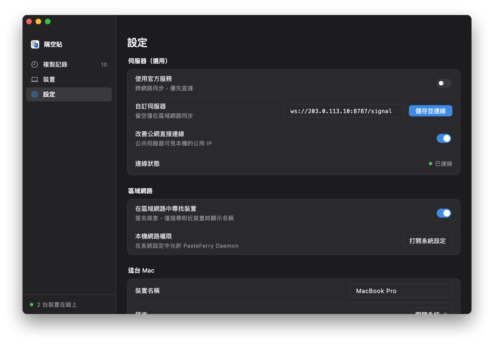

所有電腦都直接連到它
伺服器在網際網路上，每台電腦不管在哪個網路裡，都能直接連上。複製的內容優先在兩台電腦之間直連傳輸；直連打不通時經伺服器中繼，內容依然加密。
- 信令，TCP 8787。每台電腦都一直連著它，用來發現對方、配對、交換連線資訊。
- 直連。兩台電腦在不同網路裡時，靠 NAT 打洞直接相連，大多數家庭和公司網路都能打通。
- 中繼，UDP 3478 與中繼連接埠。直連打不通時經伺服器轉送，內容依然加密，速度受伺服器頻寬限制。
開始之前
- 一台雲端主機
- Linux，x86_64 或 ARM64 都可以，最低規格就夠，伺服器只佔約 15 MB 記憶體。需要 root 權限。
- 一個公用 IP
- 雲端主機附的公用 IP 就行，最好是固定的（彈性 IP）。位址變了，每台電腦都要重新填。
- 能登入它
- 能用 ssh 登入，或使用雲端服務商網頁上的遠端終端機。
- 中國大陸的雲端主機
- 網域沒有 ICP 備案時，用戶端裡要直接填 IP，不能填網域，原因見下面的常見問題。
第 1 步
在安全群組裡開放連接埠
在雲端服務商的主控台裡，幫這台雲端主機的安全群組新增下面三條傳入規則。
| 協定 | 連接埠範圍 | 來源 | 用途 |
|---|---|---|---|
| TCP | 8787 | 0.0.0.0/0 | 信令 |
| UDP | 3478 | 0.0.0.0/0 | STUN 與 TURN |
| UDP | 32768-60999 | 0.0.0.0/0 | 中繼連接埠 |
- 名稱不一樣：有的雲端服務商叫「防火牆」或「網路 ACL」，指的都是這一項。
- 中繼連接埠由系統隨機分配，範圍以伺服器為準：執行
cat /proc/sys/net/ipv4/ip_local_port_range查看，安裝腳本最後也會印出來。 - 系統防火牆：開著 ufw 或 firewalld 的話，這三條也要開放，安裝腳本最後會給出指令。
第 2 步
執行安裝腳本
把公用 IP 傳給安裝腳本，它會裝好伺服器、註冊為開機自動啟動的 systemd 服務，最後顯示用戶端要填的位址。
- 用 ssh 登入伺服器，例如
ssh root@203.0.113.10（換成你的公用 IP）。 - 逐行執行，最後一行換成你的公用 IP：ARM 伺服器把
amd64換成arm64。curl -LO https://github.com/baiyuze/pasteferry/releases/latest/download/pasteferry-server-linux-amd64.tar.gz tar xzf pasteferry-server-linux-amd64.tar.gz cd pasteferry-server-linux-amd64 sudo ./install.sh 203.0.113.10 - 最後顯示的
ws://203.0.113.10:8787/signal就是用戶端要填的位址。
- 註冊為 systemd 服務，開機自動執行，設定檔在
/etc/pasteferry/server.env。 - 升級：下載新版本，解壓縮後再執行
sudo ./install.sh，原本的設定會保留。 - 也可以用 Docker：見伺服器架設說明。
$ sudo ./install.sh 203.0.113.10 ▶ 安装二进制到 /usr/local/bin ▶ 写入 systemd 单元 ▶ 生成配置 /etc/pasteferry/server.env（中转地址 203.0.113.10） ▶ 启动 ✓ 已启动 安装完成：pasteferry-server 2.2.0 在每台电脑的 PasteFerry「设置 → 信令服务器地址」填： ws://203.0.113.10:8787/signal 配置 /etc/pasteferry/server.env 日志 journalctl -u pasteferry-server -f 重启 systemctl restart pasteferry-server 卸载 sudo ./install.sh uninstall 防火墙需放行：TCP 8787（信令）、UDP 3478（STUN 与 TURN）、UDP 32768-60999（中转端口，系统随机分配）
第 3 步
檢查能不能連到它
在任何一台電腦的瀏覽器裡打開 http://203.0.113.10:8787/healthz（換成你的公用 IP），看到下面這一行就通了。
{"status":"ok","version":"2.2.0"}
打不開的話，請看下面的常見問題。
第 4 步
在每台電腦上填位址
打開設定
在每台電腦上打開隔空貼，進入「設定」。
填入公用 IP 位址
在「信令伺服器位址」裡填
ws://203.0.113.10:8787/signal（換成你的公用 IP），按 Enter 儲存。查看連線狀態
「連線狀態」變成綠色的「已連線」就完成了。還沒配對的話，到「裝置」裡配對。

還沒裝 App？見快速入門。
| 狀態 | systemctl status pasteferry-server |
|---|---|
| 記錄檔 | journalctl -u pasteferry-server -f |
| 重新啟動 | sudo systemctl restart pasteferry-server |
| 設定 | /etc/pasteferry/server.env，改完要重新啟動服務 |
| 升級 | 下載新版本，解壓縮後再執行 sudo ./install.sh，原本的設定會保留 |
| 解除安裝 | sudo ./install.sh uninstall |
常見問題
填網域連不上，填 IP 卻能連？
在中國大陸的雲端主機上，網域沒有 ICP 備案時，雲端服務商會攔截連到它的明文 HTTP 請求，回傳一個重新導向到攔截頁的回應；實測 8787 這種不常用的連接埠也一樣。WebSocket 交握也是一個 HTTP 請求，所以同樣會被攔截，用戶端就顯示未連接。
伺服器位址裡直接填 IP 就行，例如 ws://伺服器IP:8787/signal；或者幫網域辦理 ICP 備案。
需要多高的規格？
最低規格就夠了。伺服器只佔約 15 MB 記憶體，平時只轉送很少量的信令訊息。複製的內容能直連時不經過它；只有直連打不通、改走中繼時，速度才會受它的對外頻寬限制。
裝置之間顯示「中繼」，不是「直連」？
剛連上時顯示「中繼」、過一會兒變成「直連」是正常的：先用中繼確保能用，閒置時再換成直連。一直是「中繼」的話，代表兩台電腦之間打不通，常見於連接埠隨機分配的 NAT 或嚴格的防火牆。內容同樣加密，只是速度受伺服器頻寬限制。
想用 HTTPS（wss://）？
可以放在 HTTPS 反向代理後面，用戶端填 wss:// 開頭的位址，代理需要支援 WebSocket 升級。用中國大陸的雲端主機時，網域需要 ICP 備案。STUN 與 TURN 走 UDP，不經過反向代理，安全群組照樣要開放。
一台雲端主機，
在哪裡都能同步。
版本 2.2.0，免費開源。macOS 13 以上；Windows 10、11；Linux（x64 與 ARM64）。
伺服器的完整架設說明（含 Docker 與所有參數）